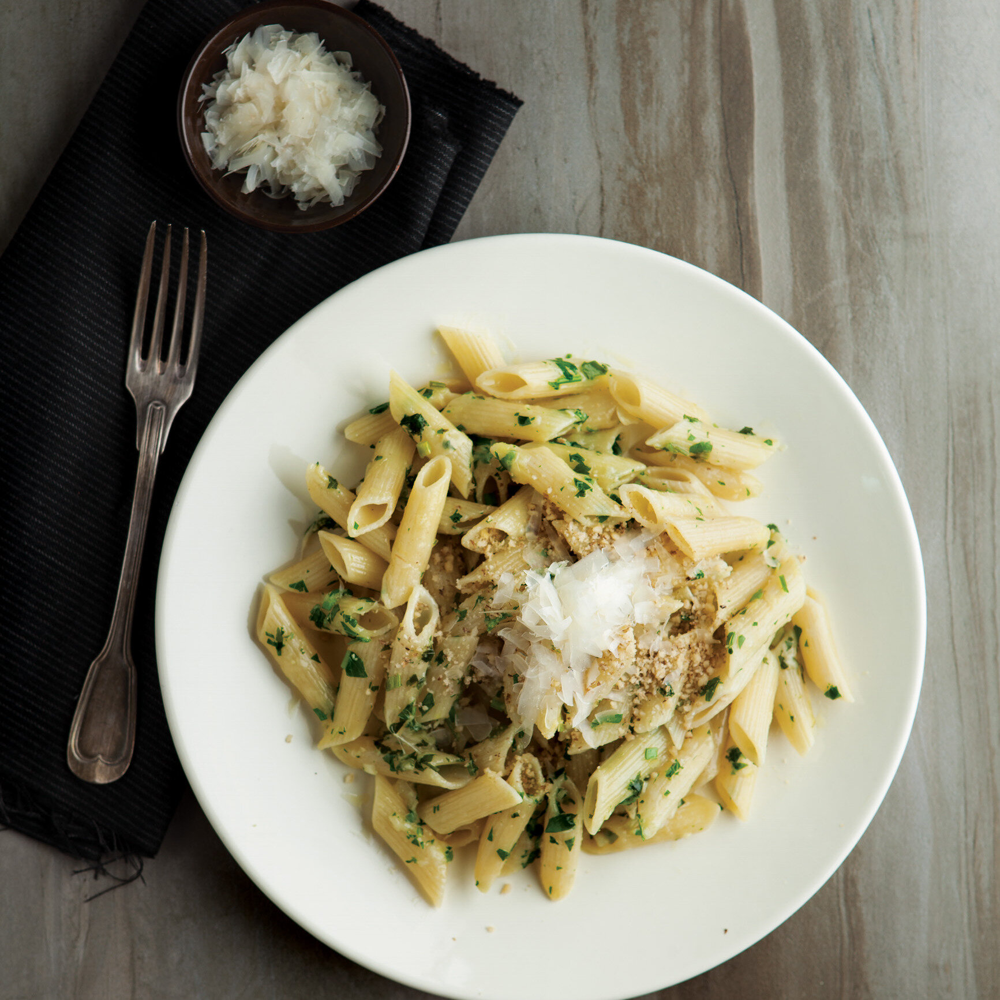

Parmesanlı Makarna Tarifi
Kişi Sayısı:
2
Hazırlama Süresi:
20 Dakika

Malzemeler:
250 gram makarna
2 su bardağı su
Tuz
2 yemek kaşığı tereyağı
1 su bardağı süt
1 su bardağı rendelenmiş parmesan peyniri
Tarif:
Makarnayı tuzlu kaynar suyun içinde haşlayın. Talimatları takip edin ve iyice süzün.
Tereyağını bir tavada eritin ve sütü ekleyin. Karışım kaynayana kadar karıştırın.
Rendelenmiş parmesan peynirini ekleyin ve peynir eriyene kadar karıştırın.
Makarnayı bu peynirli sos ile karıştırın ve servis yapın.
Sevis Önerisi:
Makarnayı isteğinize göre taze fesleğen yaprakları ve karabiber ile süsleyebilirsiniz.